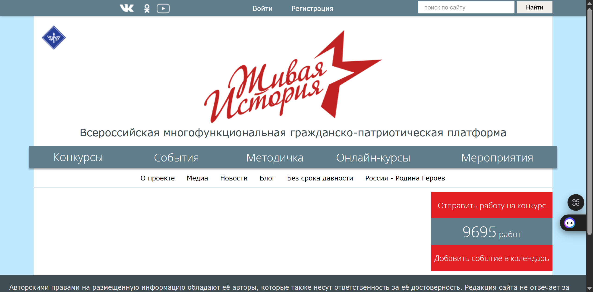
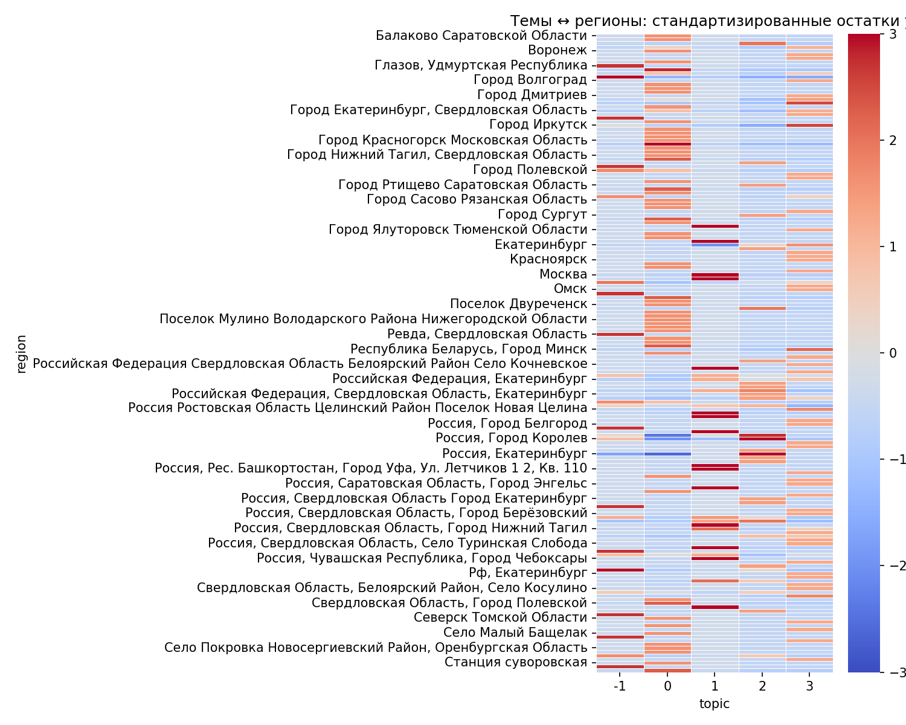
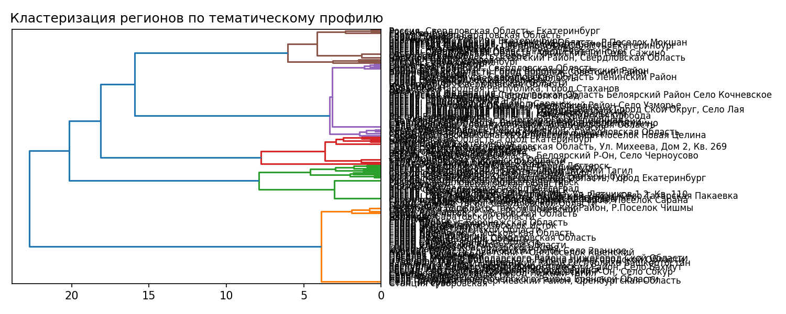
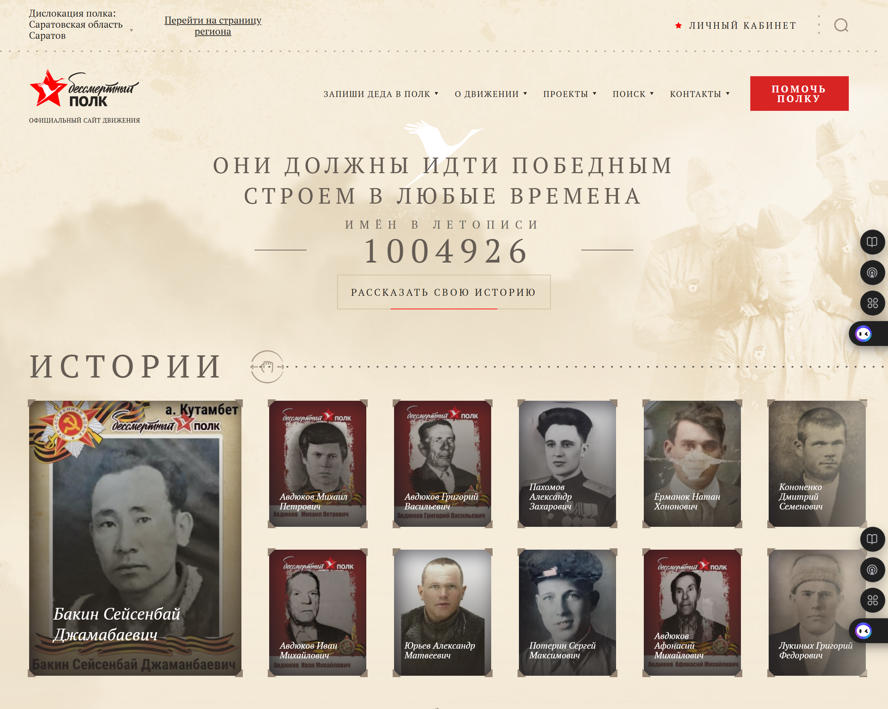

Цифровая оптика исследования семейной памяти о Великой Отечественной войне
«Современные подходы NLP в гуманитарных исследованиях: от школьных эссе до историй Бессмертного полка»
Европейский университет в Санкт-Петербурге
27 мая 2025 г.
👉mlabs.space/eusp2025
Источник данных
Коротко о том, что лежит в source_table.csv
Документы написаны по-русски школьниками и первокурсниками (2014–2024 гг.).
| Поле | Что там | Примеры |
|---|---|---|
text |
Полный текст эссе / презентации (≈ 455 документов, ~2,5 М слов) | «Автор в своей работе …» |
| Метаданные | Имя, возраст, школа, наставник, дата публикации, регион, координаты, количество скачиваний | «Габдулхакова Л. И., 18 лет, Сургут» |
Файлы-источники |
Путь к .doc(x)/.ppt(x) | `esse21/doc/10340-…` |

Методологический пайплайн
Python-First
| Инструмент | Описание |
|---|---|
pandas
|
Чтение и предварительная обработка .csv |
python-docx
|
Парсинг оригинальных .doc/.docx |
regex / ftfy
|
Чистка: кавычки, спецсимволы, кодировки |
langdetect
|
Валидация языка (только русский) |
Результат: чистый, структурированный корпус для анализа.
Предобработка текста
| Задача | Инструмент |
|---|---|
| Токенизация, лемматизация |
spaCy (ru_core_news_lg)или Stanza
|
| Стоп-слова + морф-фильтр |
pymorphy2 + stop_words-iso
|
Матрицы TF-IDF / BOW
|
scikit-learn
|
| Сжатые эмбеддинги |
sentence-transformers/paraphrase-multilingual-MiniLM-L12-v2( 768 dims)
|
Подготовка текста к аналитике, NLP-моделям и векторным представлениям.
Извлечение признаков
| Категория | Библиотека / техника |
|---|---|
| Лексика | Длина текста, TTR, средн. слогов |
| Синтаксис | Глубина дерева, доля причастий/деепричастий |
| Сентимент |
DeepPavlov/rubert-base-cased-sentiment
|
| Темы |
BERTopic (UMAP + HDBSCAN + cTF-IDF) + pyLDAvis
|
| NER & факты |
Natasha, deeppavlov-ner-rus
|
| Психолингвистика |
ru-LIWC, empath
|
| Стилометрия |
scikit-learn + 1-vs-All автор-классификатор
|
| Плагиат / сем. близость |
Шинглы + MinHash (datasketch) или FAISS + эмбеддинги
|
| Гео-связь |
geopandas, folium
|
Инструменты для комплексного анализа текста на разных уровнях: от лексики до географии.
Гипотеза H₁:
Возраст ↔ Сложность текста
«С ростом возраста авторов тексты становятся сложнее по метрикам читаемости и лексического разнообразия».
Вывод:
Гипотеза не подтверждена, связь между возрастом и сложностью текста слабая.
Проверка через Flesch Reading Ease
Flesch Reading Ease — это численная оценка читаемости текста, предложенная Рудольфом Флешем. Она вычисляется по простой формуле, в которой учитывается средняя длина предложений (больше слов = сложнее) и среднее число слогов в слове (длинные слова труднее читать). Чем выше итоговый балл (обычно от 0 до 100), тем «проще» и «легче» текст воспринимается неподготовленным читателем.
| Модель | Итог |
|---|---|
Линейная модель: flesch_ru = β₀ + β₁·age + β₂·age² |
|
💡Значит: возраст не влияет на читаемость. Даже слабый тренд отсутствует.
Почему не нашлась связь?
Узкий возрастной диапазон
80% авторов — от 15 до 18 лет
→ Нет «динамики» для анализа
Метрики не отражают «талант»
Длина слов/предложений ≠ понимание
Школьники используют шаблоны, а не «умные» слова
Разные жанры
Эссе vs. презентации — разная структура
Возраст коррелирует с жанром, а не сложностью
Шум в данных
Ошибки в возрасте (±1 год)
Отсутствие данных (NaN)
Самые слабые тренды
Flesch‑RU — адаптация классической формулы Flesch Reading Ease для русского языка:
она учитывает среднюю длину предложений и среднее число слогов в слове, но с коэффициентами,
подобранными под особенности русской морфологии. Результат выражается в шкале примерно от 0
до 100, где более высокие значения означают более «лёгкий» для восприятия текст (короткие
слова и простые предложения).
Лексическое разнообразие (TTR и MATTR)
| Показатель | Корреляция | Смысл |
|---|---|---|
| Средняя длина предложения | ρ = +0.205 (p < 0.001) |
|
| Flesch-RU | ρ = -0.134 | Тексты становятся слегка сложнее, но не ощутимо |
| Lexical Diversity (MATTR/TTR) | ρ ≤ ±0.05 | Возраст не влияет на разнообразие словаря |
💡«Статистическая значимость ≠ практическая важность».
Выводы
«Связь между возрастом автора (12–20 лет) и формальными метриками сложности текста слабая. Наиболее значимый показатель — средняя длина предложения (ρ = 0.205), но даже он объясняет ≤ 4% вариации».
- Увеличить возрастной диапазон (например, включить дошкольников);
- Использовать семантические метрики (например, BERT);
- Устранить шум в данных (проверить возраст, жанры).
requirements.txt
pandas<2.2,>=2.1
numpy>=1.26
scikit-learn==1.6.1
scipy>=1.12
textstat>=0.7
lexical-diversity==0.1.1
spacy>=3.7
ru-core-news-lg @ https://github.com/explosion/spacy-models/releases/download/ru_core_news_lg-3.7.0/ru_core_news_lg-3.7.0.tar.gz
seaborn>=0.13
matplotlib>=3.9
statsmodels>=0.14,<0.15
Гипотеза H₂:
Темы и регионы
«Распределение тем детских текстов неравномерно по регионам РФ».
Вывод:
Гипотеза подтверждена. Темы школьных работ системно связаны с регионом.
Доказательства статистики
χ²‑тест — непараметрический тест для категориальных данных, который сравнивает
фактические частоты наблюдений с ожидаемыми частотами при условии независимости переменных.
Чем больше отклонение между наблюдаемыми и ожидаемыми значениями, тем выше статистика χ²,
что указывает на возможную связь между категориями.
p‑значение — вероятность получить наблюдаемые (или более крайние) данные при условии,
что нулевая гипотеза (например, «темы не зависят от региона») верна. Если p‑значение ниже
заранее заданного порога (обычно 0.05), мы считаем такую ситуацию слишком маловероятной и
отвергаем нулевую гипотезу.
Cramér’s V — безразмерная метрика силы связи для таблиц сопряжённости (категориальных
данных), принимающая значения от 0 (никакой связи) до 1 (полная связь). В отличие от χ²,
Cramér’s V нормирует результат по размеру таблицы и объёму выборки, позволяя сравнивать силу
ассоциации в разных наборах данных.
| Показатель | Значение | Интерпретация |
|---|---|---|
| χ² | 932.25 | Огромное отклонение от независимости |
| p-значение | 3.68 × 10⁻¹⁰ | Связь НЕ случайна (p < 0.001) |
| Cramér’s V | 0.749 | Очень сильная ассоциация (максимум 1) |
💡Это не «шум»: темы действительно зависят от региона.
Как анализировать связь тем и регионов?
Подход из трех этапов:
- χ²-тест (проверка независимости);
- p-значение (вероятность случайности);
- Cramér’s V (сила связи).
Как работает χ²-тест?
Шаг 1
Вычисляем «ожидаемые» значения:
$$E_{ij} = \frac{\text{сумма в строке } i \times \text{ сумма в столбце } j}{N}$$
Шаг 2
Считаем разницу между фактом и ожиданием:
$$\chi^2 = \sum_{i}\sum_{j} \frac{(O_{ij} - E_{ij})^2}{E_{ij}}$$
- $(O_{ij} - E_{ij})^2$ — квадрат разницы (чтобы не складывались плюсы и минусы).
- Делим на $E_{ij}$ — чтобы большие регионы не «забивали» статистику просто размером.
- Складываем по всем клеткам → одно большое число $\chi^2$.
- Если $O \approx E$ почти везде → дроби крошечные → $\chi^2$ тоже крошечное.
- Если в некоторых ячейках $O$ сильно $\neq E$ → дробей много → $\chi^2$ растёт.
Большое χ² → сильная разница между фактом и случайностью.
p-значение: случайность или нет?
Мы знаем, как распределяется $\chi^2$, когда темы и регионы независимы (это теоретическая $\chi^2$-распределение с $dof=(R−1)(C−1)$ степенями свободы).
Степени свободы ($dof$, от анг. "degrees of freedom") в контексте распределения $\chi^2$ — количество независимых значений, которые могут варьироваться при заданных условиях. В случае $\chi^2$-распределения, когда мы проводим тест на независимость между двумя категориальными переменными (например, темы и регионы), степени свободы рассчитываются, где: $R$ — количество уровней (или категорий) одной переменной (например, количество регионов), $C$ — количество уровней (или категорий) другой переменной (например, количество тем).
Рассчитываем вероятность получить наблюдаемое $\chi^2$ (или ещё больше) из этого распределения.
- Если $ p < 0.05 $ → связь не случайна
- Наш $ p = 3.7 \times 10^{-10} $ → значимый результат
Cramér’s V: сила связи
Формула:
$$ V = \sqrt{\frac{\chi^2}{N \cdot (\min(R,C) - 1)}} $$
где $ 0 \leq V \leq 1 $
Шкала значений:
- $ V < 0.1 $: почти нет связи
- $ 0.1 \leq V < 0.3 $: слабая
- $ 0.3 \leq V < 0.5 $: умеренная
- $ V \geq 0.5 $: сильная
❗$\chi^2$ зависит от размера таблицы и количества документов: с большим корпусом даже крошечные эффекты дадут огромное $\chi^2$. Поэтому нормируем: $V = \sqrt{\frac{\chi^{2}}{N \, (k-1)}}, \quad k=\min(R,\,C)$.
import numpy as np, pandas as pd, scipy.stats as stats
# 1. Таблица сопряжённости
ct = pd.crosstab(df["region"], df["topic"])
# 2. χ²-тест
chi2, p, dof, expected = stats.chi2_contingency(ct, correction=False)
# 3. Cramér’s V
n = ct.to_numpy().sum()
r, c = ct.shape
cramer_v = np.sqrt(chi2 / (n * (min(r, c) - 1)))
print(f"χ²={chi2:.2f}, p={p:.3e}, V={cramer_v:.3f}")
Итоговые метрики
- Найдём клетки с самыми большими положительными/отрицательными остатками — это «визитные карточки» регионов.
- Сгруппируем регионы по похожему профилю остатков (дендрограмма) — получим кластеры территорий с общими интересами.
Так $\chi^2$-тест дал нам «штамп значимости», $p$-значение подтвердило, что это не случайность, а $\text{Cramér’s V}$ показал, насколько сильна географическая специфика.
| Метрика | Значение | Пояснение |
|---|---|---|
| $\chi^2$ | $932.25$ | Реальные данные сильно отличаются от случайности. |
| $p$ | $3.7 × 10^{-10}$ | Вероятность случайности $\approx 0.00000000037\%$. |
| $\text{Cramér’s V}$ | $0.75$ | Очень сильная связь между регионом и темами. |
🤓Главный вывод: регион сильно влияет на выбор тем школьников.
- Москва пишет больше о технике;
- Сибирь — об экологии;
- Юг — о истории.
Что такое BERTopic?
BERTopic — это инструмент для автоматической тематической кластеризации текстов, который использует BERT для векторизации и UMAP/HDBSCAN для кластеризации. Он позволяет выделять темы в больших корпусах текстов, автоматически генерировать описания тем и визуализировать результаты.
- Кластеризации текстов в темы;
- Автоматической генерации описаний тем;
- Визуализации результатов.
Как работает BERTopic?
| Шаг | Что делает | Преимущество |
|---|---|---|
| Эмбеддинги | Текст → вектор (768 чисел) с помощью Sentence-BERT. | «Понимает» смысл: похожие тексты → близкие вектора. |
| UMAP | Сжимает вектора до 5D, сохраняя соседство. | Убирает шум, ускоряет кластеризацию. |
| HDBSCAN | Автоматически определяет темы и выбросы. | Не нужно указывать число тем вручную. |
| c-TF-IDF | Выбирает ключевые слова для тем. | Читаемые «лейблы» для кластеров. |
🔎Формула c-TF-IDF для темы $t$: $$w_{t,\,w} = \Bigl(\tfrac{f_{t,w}}{L_t}\Bigr) \times \log\frac{N}{\displaystyle\sum_{t'} \mathbf{1}[f_{t',w}>0]}$$
- $f_{t,w}$ — частота слова $w$ в теме $t$ (все документы кластера склеены).
- $L_t$ — длина «слипшегося» текста темы.
- $N$ — число тем.
- Второй множитель — классический IDF (Inverse Document Frequency), где знаменатель это количество документов, содержащих термин $t$. Чем реже слово встречается в документах, тем выше его IDF.
«Экология» → ключевые слова: природа, климат, загрязнение.
«Технологии» → инновации, ИИ, цифровизация.
Как запустить BERTopic
from bertopic import BERTopic
import spacy
stop_ru = list(spacy.load("ru_core_news_lg").Defaults.stop_words)
model = BERTopic(
vectorizer_model=CountVectorizer(stop_words=stop_ru),
umap_model=umap.UMAP(n_neighbors=15),
hdbscan_model=hdbscan.HDBSCAN(min_cluster_size=20),
language="multilingual",
nr_topics=30
)
topics, _ = model.fit_transform(df["text"])
df["topic"] = topics
География тематических интересов
Тепловая карта
- Ярко-красные: темы «избыточны» в регионе;
- Синие: темы «недо-представлены».
Кластеры регионов
- Кластер А: Москва/Центр — технические темы;
- Кластер B: Сибирь/Урал — экология;
- Кластер C: Юг РФ — история/краеведение.
📎Еще один пример использования BERTopic в контексте советского прошлого: Алгоритмы выделения и представления тем в корпусе текстов при исследовании советского прошлого.
Вывод по H₂
«Распределение тем детских текстов статистически неравномерно по регионам (χ² = 932.25, p < 10⁻⁹). Cramér’s V=0.749 указывает на очень сильную связь. Кластеризация выявила три географических блока: технические темы в ЦФО, экологические — в Сибири/Урале, исторические — на Юге РФ».
- Региональные особенности влияют на выбор тем;
- Можно разрабатывать локальные образовательные программы;
- Требуется углублённый анализ причин (культура, экономика, климат).
requirements.txt
# базовые уже стоят из H1 (pandas, numpy, matplotlib, seaborn, scipy, scikit-learn==1.6.1)
bertopic==0.17.0
sentence-transformers==2.7.0
umap-learn==0.5.5
hdbscan==0.8.33
plotly>=5.21
statsmodels>=0.14,<0.15 # χ²-residuals и post-hoc
geojson # лёгкая зависимость для folium
folium==0.16.0 # интерактивная карта РФ
torch==2.2.1+cpu # CPU‐сборка PyTorch ≥ 2.0
--extra-index-url https://download.pytorch.org/whl/cpu
transformers==4.40.2 # гарантировано дружит с torch 2.2
accelerate>=0.26 # «тонкий» помощник transformers
Гипотеза H₁:
Возраст ↔ Сложность текста
«С ростом возраста авторов тексты становятся сложнее по метрикам читаемости и лексического разнообразия».
Вывод:
Гипотеза не подтверждена, связь между возрастом и сложностью текста слабая.
Предварительные выводы по эссе
Бессмертный полк
«Бессмертный полк» — это общероссийское движение, направленное на сохранение памяти о героях-участниках Великой Отечественной войны через шествия и акции. Основная цель — увековечивание подвигов солдат, а также сохранение памяти о войне в сердцах новых поколений.
- Основатели: Сергей Лапенков, Сергей Колотовкин, Игорь Дмитриев;
- Дата основания: 2011 год, Томск;
- Дата первого проведения: 9 мая 2012 года;
- Место проведения: практически все крупные города России, многие страны мира, сеть Интернет.
Источник данных
Полезные инструменты
- Kaggle Dataset — корпус эссе для анализа;
- archive.ph
- EmEditor — текстовый редактор для Windows, способный работать с очень большими объемами табличных данных (до 248 ГБ или 2,1 миллиарда строк);
Полезные библиотеки
- spaCy — для обработки естественного языка;
Полезные иструменты
Спасибо за внимание!